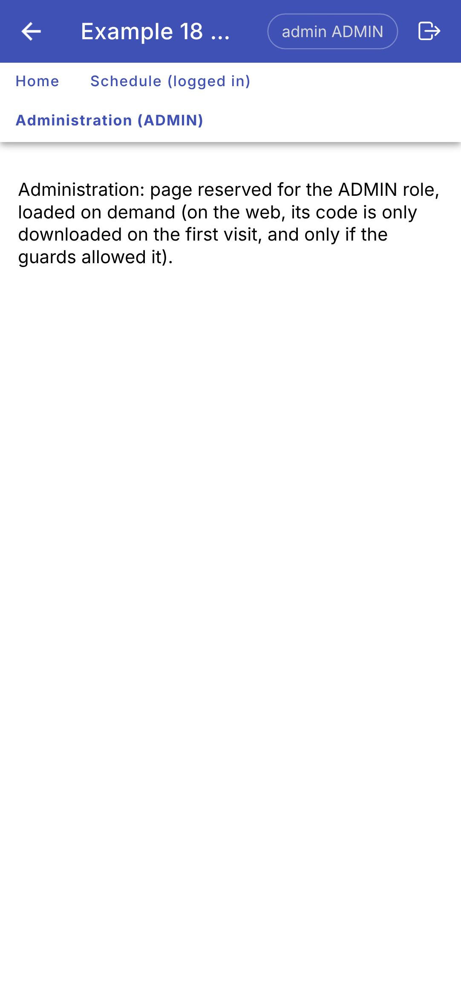

5. Routing
Eine Anwendung hat mehrere Bildschirme. Im Web hat jeder Bildschirm eine Adresse (/ex17/doctors/2): Sie kann referenziert, über einen Link geöffnet, neu geladen oder durch Guards geschützt werden. [Angular] verwaltet diese Adressen mit seinem Router (dem Paket [@angular/router]), den wir seit dem ersten Beispiel verwenden: Die Startseite der Beispielanwendung ordnet die Adresse /ex01 der Seite für Beispiel 01 zu, /ex02 der Seite für Beispiel 02 und so weiter. [Ionic] ersetzt diesen Router nicht: Es baut darauf auf und ergänzt die Funktionen, die man von einer mobilen App erwartet. Seine Komponente [<ion-router-outlet>] organisiert Seiten in einem Stack: Eine neue Seite wird auf die vorherige gestapelt (mit der Android-Animation), die Zurück-Taste des Smartphones nimmt sie wieder vom Stack, und die vorherige Seite – die im Speicher geblieben ist – erscheint genau so wieder, wie sie verlassen wurde. Er vereint den [Navigator] von [Flutter] und das Paket [go_router].
5.1. Beispiel 17: Der Router
Beispiel 17 hat sechs Seiten: eine Startseite, eine Liste der Ärzte, das Profil eines Arztes, eine Suchseite, eine bei Bedarf geladene Seite „About“ und eine Seite für unbekannte Adressen. Die ersten fünf sind in einer „Shell“ mit einer Tab-Leiste am unteren Bildschirmrand zusammengefasst (vier Tabs: Die Detailseite eines Arztes gehört zum Tab „Doctors“).
5.1.1. Die Daten
| // =========================================================================
// src/app/ex17-router/data.ts - die Daten von Beispiel 17
// -------------------------------------------------------------------------
// "Hartcodierte" Daten, um in diesem Beispiel nicht von einem Server abzuhängen.
// =========================================================================
export interface Doctor {
id: number;
title: string;
firstName: string;
lastName: string;
specialty: string;
}
export const doctors: Doctor[] = [
{ id: 1, title: 'Mme', firstName: 'Marie', lastName: 'PELISSIER', specialty: 'general practitioner' },
{ id: 2, title: 'Mr', firstName: 'Paul', lastName: 'TATOU', specialty: 'pediatrician' },
{ id: 3, title: 'Melle', firstName: 'Sophie', lastName: 'DUPONT', specialty: 'general practitioner' },
];
|
„Fest codierte“ Daten, um in diesem Beispiel nicht von einem Server abzuhängen: ein Array von Objekten, die durch das [Doctor]-Interface beschrieben werden.
5.1.2. Die Routen
| // =========================================================================
// src/app/ex17-router/routes.ts - die ROUTEN von Beispiel 17
// -------------------------------------------------------------------------
// Eine Anwendung hat mehrere Bildschirme ("Seiten"). Der ROUTER von Angular
// ordnet eine ADRESSE (einen Pfad, wie im Web: /ex17/doctors/2) einer
// Seite zu. Ionic stützt sich darauf: Sein <ion-router-outlet> macht daraus einen
// STACK von Seiten (wir pushen, wir poppen, die Zurück-Taste von Android poppt).
// Diese Routen sind die CHILDREN der Route /ex17 aus app.routes.ts
// (loadChildren): Ihre Pfade sind relativ zu /ex17.
// 'doctors/:id' :id ist ein Parameter (/ex17/doctors/2 -> id = "2");
// children Routen, die IN der "Shell" angezeigt werden (die obere
// Leiste, die Tab-Leiste unten);
// redirectTo eine Weiterleitung: Die alte Adresse führt zur neuen;
// '**' der "Wildcard": jede Adresse, die keine Route erkennt;
// title der Titel des Dokuments (Browser-Tab);
// loadComponent VERZÖGERTES Laden: Der Code der Seite wird erst
// beim ersten Besuch heruntergeladen.
// =========================================================================
import { ResolveFn, Routes } from '@angular/router';
import { Shell } from './shell';
import { doctors } from './data';
import { Home } from './pages/home.page';
import { DoctorDetail } from './pages/doctor-detail.page';
import { DoctorList } from './pages/doctor-list.page';
import { NotFoundPage } from './pages/not-found.page';
import { Search } from './pages/search.page';
// der Titel der Seite eines Arztes, berechnet aus dem Parameter :id der Adresse
const doctorTitle: ResolveFn<string> = (route) => {
const doctor = doctors.find((m) => m.id === Number(route.paramMap.get('id')));
return doctor ? `${doctor.firstName} ${doctor.lastName}` : 'Unknown doctor';
};
export const routes: Routes = [
{
// die Shell (Shell) enthält die Tab-Leiste; ihre Child-Routen
// werden IN der Shell angezeigt, oberhalb der Leiste
path: '',
component: Shell,
children: [
// /ex17 allein: Wir gehen zum Start-Tab
{ path: '', redirectTo: 'home', pathMatch: 'full' },
{ path: 'home', title: 'Home', component: Home },
{ path: 'doctors', title: 'Doctors', component: DoctorList },
// eine Seite mit einem PARAMETER: /ex17/doctors/2; sie beginnt mit
// 'doctors': Sie gehört zum Tab Doctors, auf dessen Stack sie
// eine Seite oberhalb der Liste pusht
{ path: 'doctors/:id', title: doctorTitle, component: DoctorDetail },
// /ex17/search?q=pediatrician: Der Parameter q ist ein QUERY-Parameter
{ path: 'search', title: 'Search', component: Search },
// verzögertes Laden: import() ist ein DYNAMISCHER Import
// (ein Promise); der Code der Seite wird in eine separate Datei ausgelagert
{
path: 'about',
title: 'About',
loadComponent: () => import('./pages/about.page').then((m) => m.About),
},
// eine Weiterleitung: Die Route hat keine Seite, sie verweist auf eine andere Adresse
{ path: 'physicians', redirectTo: 'doctors' },
],
},
// jede andere Adresse unter /ex17: die Seite "nicht gefunden", AUSSERHALB der Shell
{ path: '**', title: 'Page not found', component: NotFoundPage },
];
|
Eine Route ordnet einem Pfad eine Seite zu. Die Routen von Beispiel 17 liegen in dessen Ordner, und die Anwendungsroute /ex17 lädt sie über [loadChildren] (dazu später mehr): Es sind Child-Routen von /ex17, und ihre Pfade sind relativ zu /ex17 ([home] verweist auf die Adresse /ex17/home).
- Zeilen 30–33: eine Funktion vom Typ [ResolveFn<string>], die den Titel der Seite eines Arztes anhand des Parameters [:id] der URL berechnet ([route.paramMap.get('id')]). Die Eigenschaft [title] einer Route ist der Dokumenttitel (im Web der Browser-Tab): eine Zeichenkette oder eine solche Funktion. Sie ist das Gegenstück zum [Title]-Widget von [Flutter];
- Zeilen 36–41: die Shell des Beispiels. Die Route hat keinen eigenen Pfad ([path: '']); sie zeigt die Komponente [Shell] an (die obere Leiste und die Tab-Leiste), und ihre Child-Routen ([children]) werden IN der Shell angezeigt. Das entspricht der [ShellRoute] von [go_router];
- Zeile 43: Die Adresse /ex17 allein wird auf /ex17/home umgeleitet. [pathMatch: 'full']: Die Route gilt nur, wenn die verbleibende Adresse leer ist (sonst würde der leere Pfad – der der Anfang jeder Adresse ist – immer zutreffen);
- Zeilen 44–45: eine Standardroute: ihr Pfad, ihr Titel und ihre Seitenkomponente;
- Zeile 49: eine Route mit einem Parameter: [doctors/:id], wobei [:id] ein Parameter ist ([/ex17/doctors/2]: [id] entspricht ["2"], was immer eine Zeichenkette ist). Mit [go_router] war diese Route in die der Liste verschachtelt; hier steht sie neben ihr. Ihr Pfad beginnt mit [doctors]: Für [Ionic] gehört sie zum Tab „Doctors“, und ihre Seite wird im Stack dieses Tabs über die Liste gestapelt;
- Zeile 51: die Suche. Ihre Query-Parameter (nach [?]: [/ex17/search?q=pediatrician]) erscheinen nicht im Pfad der Route: Jede Route kann sie akzeptieren;
- Zeilen 54–58: verzögertes Laden. [loadComponent] ist eine Funktion, die ein [Promise] zurückgibt: [import('./pages/about.page')] ist ein dynamischer Import von [JavaScript], der die Datei beim Ausführen lädt, und [then] extrahiert daraus die Komponente. Die Kompilierung ([ng build]) legt den Code der Seite dann in einer separaten Datei ab, [JavaScript], die beim ersten Besuch der Seite heruntergeladen wird. Das ist das Gegenstück zum Import von [Dart] mittels [deferred as];
- Zeile 60: eine Weiterleitung: Die Route hat keine Seite; sie leitet auf eine andere Adresse um. [redirectTo] kann auch eine Funktion sein, die die Adresse berechnet;
- Zeile 64: die Wildcard-Route [**] trifft auf jede Adresse zu, die keine vorherige Route erfasst hat (der Router probiert die Routen der Reihe nach durch). Sie steht außerhalb der Shell: Die Seite „Seite nicht gefunden“ hat ihre eigene Kopfleiste. Das ist das Gegenstück zu [errorBuilder] von [go_router].
5.1.3. Start
Der Router wird einmalig beim Start der Anwendung in der Datei [main.ts] eingerichtet:
| // der Router: die Liste der Routen (app.routes.ts);
// withComponentInputBinding: Die Parameter einer Route werden an die
// Inputs (input) der Komponente der Seite übergeben (siehe Beispiel 17)
provideRouter(routes, withComponentInputBinding()),
|
- Zeile 32: [provideRouter] erhält die Liste der Routen der Anwendung; die Option [withComponentInputBinding()] übergibt die Parameter einer Route (die des Pfads, wie [:id], und die der Anfrage, wie [?q=]) an die gleichnamigen Inputs ([input()]) in der Seitenkomponente. Das ersetzt hier [state.pathParameters['id']] bei [go_router].
Und die Anwendungsroute /ex17 (Datei [app.routes.ts]) lädt die Routen des Beispiels:
| // die Beispiele 17 und 18 haben eigene Routen, "children" von /ex17 und /ex18
{ path: 'ex17', loadChildren: () => import('./ex17-router/routes').then((m) => m.routes) },
{ path: 'ex18', loadChildren: () => import('./ex18-guards/routes').then((m) => m.routes) },
|
- Zeile 31: [loadChildren]: wie [loadComponent] ein dynamischer Import; die Beispieldatei [routes.ts] und alles, was sie importiert, wird erst beim ersten Besuch einer URL heruntergeladen, die mit /ex17 beginnt.
5.1.4. Die Shell der Anwendung
| // =========================================================================
// src/app/ex17-router/shell.ts - die "Shell" von Beispiel 17
// -------------------------------------------------------------------------
// Die obere Leiste, die Tab-Leiste unten und dazwischen die Seite
// der aktuellen Route. Es ist die Komponente <ion-tabs> von Ionic:
// - <ion-tab-bar slot="bottom">: die Tab-Leiste, unten;
// - <ion-tab-button tab="doctors">: ein Tab; Sein Antippen führt zur
// Adresse /ex17/doctors. Der aktive Tab ist der, dessen Name das
// erste Segment der Adresse (nach /ex17) ist: /ex17/doctors/2 -> Doctors;
// - jeder Tab hat seinen EIGENEN Stack von Seiten: Wir können in das
// Detail eines Arztes gehen, zum Tab Search wechseln, zum
// Tab Doctors zurückkehren ... und das Detail wiederfinden.
// =========================================================================
import { Component, computed, inject } from '@angular/core';
import { Router } from '@angular/router';
import {
IonBackButton, IonButtons, IonHeader, IonIcon, IonLabel, IonTabBar, IonTabButton, IonTabs, IonTitle, IonToolbar,
} from '@ionic/angular';
import { addIcons } from 'ionicons';
import { home, informationCircle, people, search } from 'ionicons/icons';
import { DeferredLoading } from './pages/deferred-loading';
// die Tabs: der Name des Tabs (= der Pfad, nach /ex17), die Beschriftung, das Symbol
const tabs = [
{ tab: 'home', label: 'Home', icon: 'home' },
{ tab: 'doctors', label: 'Doctors', icon: 'people' },
{ tab: 'search', label: 'Search', icon: 'search' },
{ tab: 'about', label: 'About', icon: 'information-circle' },
];
@Component({
selector: 'app-ex17-shell',
imports: [
IonTabs, IonTabBar, IonTabButton, IonIcon, IonLabel, IonHeader, IonToolbar, IonButtons, IonBackButton, IonTitle,
DeferredLoading,
],
templateUrl: './shell.html',
styles: `
.address {
background: var(--ion-color-light);
color: var(--ion-color-light-contrast);
padding: 8px;
font-family: monospace;
font-size: 12px;
}
`,
})
export class Shell {
readonly tabs = tabs;
private readonly router = inject(Router);
// die aktuelle Adresse. lastSuccessfulNavigation ist ein SIGNAL des Routers:
// die letzte erfolgreiche Navigation; finalUrl: ihre Adresse nach den
// Weiterleitungen. decodeURIComponent: %20 wird wieder zu einem Leerzeichen
readonly address = computed(() => {
const navigation = this.router.lastSuccessfulNavigation();
return navigation?.finalUrl ? decodeURIComponent(this.router.serializeUrl(navigation.finalUrl)) : '';
});
constructor() {
// die vom Template verwendeten Symbole
addIcons({ home, people, search, informationCircle });
}
}
|
| <!-- ======================================================================
shell.html - die Shell von Beispiel 17: <ion-tabs>
====================================================================== -->
<ion-tabs>
<!-- slot="top": ÜBER den Seiten der Tabs platziert -->
<ion-header slot="top">
<ion-toolbar color="primary">
<ion-buttons slot="start">
<!-- diese Zurück-Schaltfläche verlässt das Beispiel: Sie poppt die Shell -->
<ion-back-button defaultHref="/" />
</ion-buttons>
<ion-title>Example 17 - the router</ion-title>
</ion-toolbar>
<div class="address">current address: {{ address() }}</div>
<!-- eine Fortschrittsleiste, während eine verzögert geladene Seite geladen wird -->
<app-deferred-loading />
</ion-header>
<!-- hier platziert <ion-tabs> selbst einen <ion-router-outlet>: die Seite
der aktuellen Child-Route -->
<!-- die Tab-Leiste unten: typisch für eine mobile Anwendung -->
<ion-tab-bar slot="bottom">
@for (tab of tabs; track tab.tab) {
<ion-tab-button [tab]="tab.tab">
<ion-icon [name]="tab.icon" />
<ion-label>{{ tab.label }}</ion-label>
</ion-tab-button>
}
</ion-tab-bar>
</ion-tabs>
|
Die Shell ist die Komponente [<ion-tabs>] von [Ionic]: eine Tab-Leiste und darüber die Seite des ausgewählten Tabs.
- Zeilen 25–30 (shell.ts): die Tabs: ein Name (der zugleich der Pfad nach /ex17 ist), ein Label und ein Icon;
- Zeilen 56–59 (shell.ts): die aktuelle Adresse, ein berechnetes Signal ([computed]). Der Router stellt Signale bereit: [lastSuccessfulNavigation()], die letzte erfolgreiche Navigation, und [currentNavigation()], die aktuelle Navigation (dazu später mehr). [finalUrl] ist die Zieladresse nach Weiterleitungen; [serializeUrl] wandelt sie in eine Zeichenkette um; [decodeURIComponent] dekodiert die kodierten Zeichen ([%20] wird wieder zu einem Leerzeichen). Da das Signal bei jeder Navigation neu gelesen wird, folgt die angezeigte Adresse;
- Zeile 63 (shell.ts): die vom Template verwendeten Icons;
- Zeilen 7–18 (shell.html): die obere Leiste. [<ion-tabs>] platziert die mit [slot="top"] markierten Elemente über den Tab-Seiten und die übrigen darunter. Der Zurück-Button in dieser Leiste schließt die gesamte Shell: Er führt Sie zum Beispielmenü zurück;
- Zeile 15 (shell.html): die aktuelle Adresse;
- Zeile 17 (shell.html): ein Fortschrittsbalken, der während der Navigation angezeigt wird (siehe unten);
- Zeilen 20–21 (shell.html): [<ion-tabs>] platziert zwischen den beiden Leisten selbst ein [<ion-router-outlet>]: die Seite der aktuellen Child-Route. Das schreiben wir nicht;
- Zeilen 24–31 (shell.html): die untere Tab-Leiste ([<ion-tab-bar slot="bottom">]), typisch für eine mobile App, ist das Gegenstück zur [NavigationBar] von [Flutter]. Jeder [<ion-tab-button [tab]="...">] ist ein Tab; das Antippen führt zur Adresse /ex17/<tab name>.
Zwei Unterschiede zu [go_router]:
- Der aktive Tab wird nicht vom Code berechnet: [<ion-tabs>] leitet ihn aus der URL ab (der Tab, dessen Name das erste Segment der URL nach /ex17 ist: [/ex17/doctors/2] verweist auf den Tab [doctors]);
- Jeder Tab hat seinen eigenen Seiten-Stack. Wenn Sie die Details eines Arztes ansehen, zum Tab „Search“ wechseln und dann zum Tab „Doctors“ zurückkehren, sehen Sie wieder die Details des Arztes, und der Zurück-Button führt Sie zur Liste zurück. Das ist das übliche Verhalten mobiler Apps (etwa für [Android] und [iOS]).
5.1.5. Die Seiten
Die Seiten in den Tabs haben nur ein [<ion-content>]: Ihre obere Leiste ist die der Shell.
| // =========================================================================
// src/app/ex17-router/pages/home.page.ts - der Start-Tab
// -------------------------------------------------------------------------
// routerLink: ein LINK auf eine Adresse; ein Tippen führt dorthin, wie ein
// Link <a href> im Web, aber ohne die Anwendung neu zu laden.
// =========================================================================
import { Component } from '@angular/core';
import { RouterLink } from '@angular/router';
import { IonButton, IonContent } from '@ionic/angular';
@Component({
selector: 'app-ex17-home',
imports: [RouterLink, IonContent, IonButton],
templateUrl: './home.page.html',
})
export class Home {}
|
| <!-- ======================================================================
home.page.html - der Start-Tab von Beispiel 17
====================================================================== -->
<!-- eine Tab-Seite hat nur ihren Inhalt: Die obere Leiste ist die der Shell -->
<ion-content class="ion-padding">
<p>
Welcome. Touch the tabs: the screen changes, and so does its address. On the web, the address
is displayed in the browser's bar, the Back and Forward buttons work, as does
reloading (F5) any page.
</p>
<!-- Links auf bestimmte Adressen -->
<ion-button fill="outline" routerLink="/ex17/physicians">/ex17/physicians (redirection)</ion-button>
<ion-button fill="outline" routerLink="/ex17/unknown-page">Broken link</ion-button>
</ion-content>
|
- Zeilen 13–14 (HTML): zwei Links. Die Direktive [routerLink] von [Angular] (importiert in Zeile 9 der .ts-Datei) macht jedes Element zu einem Link: Das Antippen führt zur angegebenen Adresse, genau wie ein [<a href>]-Link im Web, aber ohne die Anwendung neu zu laden. Der erste führt zur Weiterleitung /ex17/physicians, der zweite zu einer Adresse, die nicht existiert.
| // =========================================================================
// src/app/ex17-router/pages/doctor-list.page.ts - Links mit einem Parameter
// -------------------------------------------------------------------------
// [routerLink]="['/ex17/doctors', m.id]": Die Adresse wird aus
// einem Array von Segmenten gebaut: /ex17/doctors/2. Die Seite des Arztes wird
// oberhalb der Liste GEPUSHT: Die Zurück-Taste führt zu ihr zurück.
// =========================================================================
import { Component } from '@angular/core';
import { RouterLink } from '@angular/router';
import { IonContent, IonItem, IonLabel, IonList } from '@ionic/angular';
import { doctors } from '../data';
@Component({
selector: 'app-ex17-doctor-list',
imports: [RouterLink, IonContent, IonList, IonItem, IonLabel],
templateUrl: './doctor-list.page.html',
})
export class DoctorList {
readonly doctors = doctors;
}
|
| <!-- ======================================================================
doctor-list.page.html - der Tab Ärzte von Beispiel 17
====================================================================== -->
<ion-content>
<ion-list>
@for (m of doctors; track m.id) {
<!-- button: Das Item reagiert auf Berührung; detail: der Pfeil > rechts -->
<ion-item button detail [routerLink]="['/ex17/doctors', m.id]">
<ion-label>{{ m.title }} {{ m.firstName }} {{ m.lastName }}</ion-label>
</ion-item>
}
</ion-list>
</ion-content>
|
- Zeile 9 (HTML): ein anklickbares Listenelement ([button]) mit einem Pfeil nach rechts ([detail]). Seine URL wird aus einem Array von Segmenten aufgebaut: [[routerLink]="['/ex17/doctors', m.id]"] ergibt /ex17/doctors/2. Die Seite des Arztes wird über die Liste GESTAPELT (ein „Vorwärts“-Navigationsschritt): Der Zurück-Button führt zu dieser Seite zurück.
| // =========================================================================
// src/app/ex17-router/pages/doctor-detail.page.ts - eine Seite mit einem Parameter
// -------------------------------------------------------------------------
// Der Router übergibt den Parameter :id der Adresse an den INPUT id der Seite
// (input), einen STRING ("2"): Das ist withComponentInputBinding() (main.ts).
// Wenn wir von /ex17/doctors/1 zu /ex17/doctors/2 gehen, behält Angular
// dieselbe Seite und ändert nur den Wert des Inputs: Der angezeigte
// Arzt, daraus berechnet (computed), folgt.
// Navigation per CODE: NavController, der Navigationsservice von Ionic.
// =========================================================================
import { Component, computed, inject, input } from '@angular/core';
import { IonButton, IonContent, IonRouterOutlet, IonText, NavController } from '@ionic/angular';
import { doctors } from '../data';
@Component({
selector: 'app-ex17-doctor-detail',
imports: [IonContent, IonButton, IonText],
templateUrl: './doctor-detail.page.html',
})
export class DoctorDetail {
// der Parameter :id der Adresse
readonly id = input.required<string>();
// Number("abc") ist NaN: Es wird kein Arzt gefunden (undefined)
readonly doctor = computed(() => doctors.find((m) => m.id === Number(this.id())));
// die Nummer des nächsten Arztes: 1 -> 2 -> 3 -> 1
readonly next = computed(() => ((this.doctor()?.id ?? 0) % doctors.length) + 1);
private readonly navCtrl = inject(NavController);
// der Seitenstack des Tabs (das <ion-router-outlet>, das diese Seite anzeigt)
private readonly outlet = inject(IonRouterOutlet);
back(): void {
// canGoBack: Gibt es eine Seite darunter? (nicht, wenn wir im Web
// direkt auf dieser Adresse angekommen sind)
if (this.outlet.canGoBack()) {
this.outlet.pop();
} else {
this.navCtrl.navigateBack('/ex17/doctors');
}
}
nextDoctor(): void {
// replaceUrl: Die Adresse ERSETZT die aktuelle Adresse im Verlauf
// (kein Push: Die Zurück-Taste führt zur Liste zurück)
this.navCtrl.navigateForward(['/ex17/doctors', this.next()], { replaceUrl: true });
}
}
|
| <!-- ======================================================================
doctor-detail.page.html - die Seite eines Arztes (Beispiel 17)
====================================================================== -->
<ion-content class="ion-padding">
<!-- @if (...; as m): der Wert des Tests, m genannt, im Block -->
@if (doctor(); as m) {
<h2>{{ m.title }} {{ m.firstName }} {{ m.lastName }}</h2>
<p>Specialty: {{ m.specialty }}</p>
<ion-button fill="outline" (click)="back()">Back</ion-button>
<ion-button (click)="nextDoctor()">Next doctor</ion-button>
} @else {
<ion-text color="danger">Doctor no. {{ id() }} does not exist.</ion-text>
}
</ion-content>
|
- Zeile 23 (.ts): der Input [id], der den Parameter [:id] aus der Adresse erhält ([withComponentInputBinding]). [input.required<string>()]: ein erforderlicher Input vom Typ string;
- Zeile 26 (.ts): der Arzt, ein aus dem Input berechnetes Signal. [Number("abc")] ergibt [NaN], was keiner Zahl gleicht: Eine ungültige [id] liefert [undefined] (bei [int.tryParse] mit [Dart] war es so). Wenn Sie von /ex17/doctors/1 zu /ex17/doctors/2 navigieren, behält [Angular] dieselbe Seite bei und ändert nur den Wert des Inputs: Der angezeigte Arzt folgt;
- Zeile 28 (.ts): die Nummer des nächsten Arztes (1, 2, 3, dann wieder 1);
- Zeile 30 (.ts): [NavController], der Navigations-Service von [Ionic]: Navigation per CODE;
- Zeile 32 (.ts): [IonRouterOutlet]: der Seiten-Stack, der diese Seite anzeigt (der des Tabs „Doctors“);
- Zeilen 34–42 (.ts): der Zurück-Button der Seite. Gibt es unter ihr eine weitere Seite ([canGoBack()]), wird sie vom Stack entfernt ([pop()]); andernfalls (im Web kann der Benutzer direkt auf dieser Adresse gelandet sein) wird der Benutzer mit einer „Zurück“-Animation zur Liste geführt ([navigateBack]);
- Zeilen 44–48 (.ts): der nächste Arzt: eine „Vorwärts“-Navigation ([navigateForward]), aber mit [replaceUrl: true]: Die neue Adresse ERSETZT die aktuelle Adresse im Verlauf. Kein Stack: Der Zurück-Button führt zur Liste, nicht zum vorherigen Arzt (das war [context.pushReplacement] mit [go_router]);
- Zeilen 7–14 (HTML): [@if (doctor(); as m)]: Wenn der Arzt existiert, heißt er im Block [m] ; andernfalls ([@else]) erscheint eine Meldung.
Mit [Ionic]gibt es drei Möglichkeiten zu navigieren:
- über einen Link: [routerLink];
- über den [Angular]-Router: [router.navigate([...])] oder [router.navigateByUrl('...')];
- über den [NavController] von [Ionic]: [navigateForward] (eine Seite stapeln, früher [context.push]), [navigateBack] (zurückgehen, indem die obenliegenden Seiten entstapelt werden), [navigateRoot] (mit einem neuen Stack beginnen – das war früher [context.go]), [back()] (wie der Zurück-Button). Diese Methoden rufen den [Angular]-Router auf und geben dabei die RICHTUNG der Navigation an, von der die Animation und die Stack-Verwaltung abhängen.
| // =========================================================================
// src/app/ex17-router/pages/search.page.ts - eine von der Adresse gesteuerte Seite
// -------------------------------------------------------------------------
// /ex17/search?q=pediatrician: Die Seite wird vollständig durch ihre
// Adresse beschrieben. Im Web können wir sie als Lesezeichen speichern, neu laden,
// zurückgehen. Suchen heißt, zur Adresse /ex17/search?q=... ZU GEHEN:
// Die Seite zeigt an, was die Adresse sagt, und nichts anderes.
// Der QUERY-Parameter q (nach dem ?) wird ebenfalls an den gleichnamigen Input
// übergeben (withComponentInputBinding); er ist undefined, wenn er fehlt.
// =========================================================================
import { Component, computed, inject, input } from '@angular/core';
import { Router } from '@angular/router';
import { IonContent, IonItem, IonLabel, IonList, IonSearchbar } from '@ionic/angular';
import { doctors } from '../data';
@Component({
selector: 'app-ex17-search',
imports: [IonContent, IonSearchbar, IonList, IonItem, IonLabel],
templateUrl: './search.page.html',
})
export class Search {
// der Parameter ?q=... der Adresse
readonly q = input<string>();
// die Ergebnisse: neu berechnet, wenn sich die Adresse (also q) ändert
readonly results = computed(() => {
const text = (this.q() ?? '').toLowerCase();
return doctors.filter((m) => `${m.firstName} ${m.lastName} ${m.specialty}`.toLowerCase().includes(text));
});
private readonly router = inject(Router);
search(input: string): void {
// queryParams: Der Router baut die Adresse und kodiert, was
// nötig ist (Leerzeichen -> %20)
this.router.navigate(['/ex17/search'], { queryParams: { q: input.trim() } });
}
}
|
| <!-- ======================================================================
search.page.html - der Tab Suche von Beispiel 17
====================================================================== -->
<ion-content class="ion-padding">
<!-- ein NICHT kontrolliertes Feld: [value] gibt ihm den Wert der Adresse (und
gibt ihn erneut, wenn sich die Adresse ändert: Zurück-Button des Browsers);
#field: eine Referenz auf die Komponente, um ihren Wert zu lesen;
enterkeyhint="search": Die Eingabetaste der Tastatur wird zu einer Lupe -->
<ion-searchbar
#field
placeholder="name or specialty"
enterkeyhint="search"
[value]="q() ?? ''"
(keyup.enter)="search(field.value ?? '')"
/>
<ion-list>
@for (m of results(); track m.id) {
<ion-item>
<ion-label>{{ m.firstName }} {{ m.lastName }} ({{ m.specialty }})</ion-label>
</ion-item>
} @empty {
<ion-item>
<ion-label color="medium">No result.</ion-label>
</ion-item>
}
</ion-list>
</ion-content>
|
- Zeile 24 (.ts): Der Input [q] erhält den Anfrageparameter [?q=...]. Er kann fehlen: In diesem Fall ist der Input [undefined], woraus sich der Typ [input<string>()] (eine Zeichenkette oder [undefined]) und die Werte [?? ''] ergeben;
- Zeilen 27–30 (.ts): die Ergebnisse, neu berechnet, wenn sich die Adresse (also [q]) ändert;
- Zeilen 34–38 (.ts): die Suche – das bedeutet, zur Adresse /ex17/search?q=<input> ZU GEHEN. [router.navigate] erhält den Pfad, und [queryParams] erhält die Anfrageparameter; es konstruiert die URL, indem es die nötigen Teile kodiert (ein Leerzeichen wird zu [%20]). Die Seite wird vollständig durch ihre Adresse beschrieben: Im Web können Sie sie als Lesezeichen speichern, neu laden oder zurückgehen;
- Zeilen 10–16 (HTML): eine Suchleiste von [Ionic] ([<ion-searchbar>], mit Lupe und Löschen-Button). Das ist ein NICHT kontrolliertes Feld: [[value]] setzt seinen Wert auf die Adresse und setzt ihn zurück, wenn sich die Adresse ändert (über den Zurück-Button des Browsers), genau wie der Schlüssel [ValueKey(q)] bei [Flutter]. [#field] ist eine Template-Referenzvariable: Sie verweist auf die Komponente, deren Wert ([field.value]) beim Drücken der Eingabetaste ([(keyup.enter)]) gelesen wird. [enterkeyhint="search"]: Die Eingabetaste der Smartphone-Tastatur wird zur Lupe;
- Zeilen 18–26 (html): die Ergebnisse; [@empty]: der Inhalt, der angezeigt wird, wenn die Liste leer ist.
| // =========================================================================
// src/app/ex17-router/pages/about.page.ts - eine bei Bedarf geladene Seite
// -------------------------------------------------------------------------
// Siehe loadComponent in routes.ts: Der Code dieser Seite wird beim
// Kompilieren (ng build) in eine separate JavaScript-Datei ausgelagert.
// =========================================================================
import { Component } from '@angular/core';
import { IonContent } from '@ionic/angular';
@Component({
selector: 'app-ex17-about',
imports: [IonContent],
templateUrl: './about.page.html',
})
export class About {}
|
| <!-- ======================================================================
about.page.html - der Tab Info von Beispiel 17
====================================================================== -->
<ion-content class="ion-padding">
<p>
On the web, the code of this page was downloaded on the first visit (Network tab of the
development tools: a chunk-XXXXXXXX.js file). On a phone, this file is
already in the application: it is read on the spot, without download.
</p>
</ion-content>
|
Die bei Bedarf geladene Seite (siehe [loadComponent] in [routes.ts]) ist nichts Besonderes: Die Route bestimmt das verzögerte Laden. Das Ergebnis von [ng build] zeigt ihre separate Datei („Lazy chunk files ... about-page“). In der Beispielanwendung werden übrigens alle Seiten auf diese Weise geladen (siehe [app.routes.ts]): Beim Start wird nur das Menü heruntergeladen.
| // =========================================================================
// src/app/ex17-router/pages/deferred-loading.ts
// -------------------------------------------------------------------------
// Eine Fortschrittsleiste, angezeigt, solange eine Navigation LÄUFT:
// In dieser Zeit lädt der Router den Code einer verzögert geladenen Seite herunter
// (loadComponent) oder wartet auf die Antwort eines Guards (Beispiel 18).
// currentNavigation ist ein SIGNAL des Routers: die laufende Navigation oder
// null, wenn es keine gibt.
// =========================================================================
import { Component, inject } from '@angular/core';
import { Router } from '@angular/router';
import { IonProgressBar } from '@ionic/angular';
@Component({
selector: 'app-deferred-loading',
imports: [IonProgressBar],
templateUrl: './deferred-loading.html',
})
export class DeferredLoading {
readonly router = inject(Router);
}
|
| <!-- ======================================================================
deferred-loading.html - eine „unbestimmte" Fortschrittsleiste
====================================================================== -->
@if (router.currentNavigation()) {
<ion-progress-bar type="indeterminate" />
}
|
Bei [Flutter]zeigte das [DeferredLoading]-Widget eine Ladeanzeige an, während auf den Code der Seite gewartet wurde. Bei [Angular]wartet der Router selbst auf den Code, bevor er die Seite anzeigt: Die vorherige Seite bleibt währenddessen auf dem Bildschirm. Die Komponente [DeferredLoading] zeigt daher einen Fortschrittsbalken an, solange die Navigation läuft:
- Zeile 5 (html): [router.currentNavigation()] ist ein Signal des Routers: laufende Navigation oder [null]. Während eine verzögert geladene Seite heruntergeladen wird (oder während auf einen Guard gewartet wird, Beispiel 18), wird der Fortschrittsbalken ([<ion-progress-bar type="indeterminate">], ein endlos animierter Balken) angezeigt; am Ende der Navigation springt das Signal zurück auf [null], und er verschwindet. Die Shell platziert ihn unter ihrer oberen Leiste (Zeile 17 von shell.html).
| // =========================================================================
// src/app/ex17-router/pages/not-found.page.ts - die unbekannten Adressen
// -------------------------------------------------------------------------
// Die Seite der Wildcard-Route '**' (routes.ts): Sie liegt AUSSERHALB der
// Shell, hat also ihre eigene obere Leiste.
// =========================================================================
import { Component, computed, inject } from '@angular/core';
import { Router } from '@angular/router';
import { IonButton, IonContent, IonHeader, IonText, IonTitle, IonToolbar, NavController } from '@ionic/angular';
@Component({
selector: 'app-ex17-not-found-page',
imports: [IonHeader, IonToolbar, IonTitle, IonContent, IonText, IonButton],
templateUrl: './not-found.page.html',
})
export class NotFoundPage {
private readonly router = inject(Router);
private readonly navCtrl = inject(NavController);
// die angeforderte Adresse (siehe shell.ts)
readonly address = computed(() => {
const navigation = this.router.lastSuccessfulNavigation();
return navigation?.finalUrl ? decodeURIComponent(this.router.serializeUrl(navigation.finalUrl)) : '';
});
backHome(): void {
// navigateBack: eine Navigation "rückwärts" (die Animation läuft von links
// nach rechts); die Seite "nicht gefunden" wird gepoppt
this.navCtrl.navigateBack('/ex17/home');
}
}
|
| <!-- ======================================================================
not-found.page.html - die Seite für unbekannte Adressen (Beispiel 17)
====================================================================== -->
<ion-header>
<ion-toolbar color="primary">
<ion-title>Page not found</ion-title>
</ion-toolbar>
</ion-header>
<ion-content class="ion-padding">
<p><ion-text color="danger">No page at the address {{ address() }}.</ion-text></p>
<ion-button (click)="backHome()">Back to home</ion-button>
</ion-content>
|
Die Seite für unbekannte Adressen liegt außerhalb der Shell: Sie hat ihre eigene obere Leiste (Zeilen 5–9 des HTML). Sie zeigt die angeforderte Adresse an (Zeilen 22–25 der .ts-Datei, wie in der Shell), und ihr Button führt den Benutzer über eine „Zurück“-Navigation (Zeile 30 der .ts-Datei) zur Startseite zurück: Die Seite „Seite nicht gefunden“ wird entstapelt, und die Shell, die darunter im Speicher geblieben war, erscheint wieder.
5.1.6. Ausführung
Die Startseite; das Profil eines Arztes (über die Liste gestapelt: Die Tab-Leiste ist weiterhin da, und die Zurück-Taste des Smartphones führt zur Liste zurück); die Suchergebnisse nach Eingabe von „general practitioner“ und Drücken der Eingabetaste; eine unbekannte Adresse (der defekte Link auf der Startseite):
In einem Browser ([ng serve]) erscheint die Adresse auch in der Adressleiste, die Buttons „Zurück“ und „Vorwärts“ funktionieren, und Sie können eine Adresse manuell eingeben: /ex17/doctors/3, /ex17/search?q=pediatrician, /ex17/physicians ...
Im Vergleich zu [go_router]ist der Router in [Angular] deklarativer: Routen sind eine einfache Liste von Objekten, Parameter werden an die Inputs der Seite übergeben, und Lazy Loading ist schlicht eine Eigenschaft der Route. [Ionic] ergänzt Funktionen, die für Mobilgeräte spezifisch sind: den Seiten-Stack ([<ion-router-outlet>]), Tabs mit getrennten Stacks ([<ion-tabs>]), die Navigationsrichtung und Navigationsanimationen ([NavController]). Genau dieselben Konzepte finden wir im [Angular]-Client von [RdvMedecins] wieder (die Routen, [routerLink], [router.navigate]): Nur die Komponenten von [Ionic] sind spezifisch für Mobilgeräte.
5.2. Beispiel 18: Navigationsbeschränkungen
Bestimmte Seiten sollten nur von einem angemeldeten Benutzer oder von einem Benutzer mit einer bestimmten Rolle geöffnet werden. Der Router von [Angular] schützt sie mit Guards: Funktionen, die er aufruft, bevor er zu diesen Seiten weitergeht.
5.2.1. Die Sitzung
| // =========================================================================
// src/app/ex18-guards/session.ts - eine SIMULIERTE Sitzung (ohne Server)
// -------------------------------------------------------------------------
// Der angemeldete Benutzer muss den SEITEN (die obere Leiste,
// der Terminkalender) und den GUARDS des Routers (Funktionen, die keine
// Komponenten sind) bekannt sein. Wir speichern ihn in einem SERVICE, einem einzigen Objekt, das jeder
// mit inject(Session) erhält (siehe Beispiel 14):
// - ein privates Signal, der Zustand;
// - eine schreibgeschützte Sicht auf dieses Signal;
// - Methoden, um ihn zu ändern.
// Wer das Signal liest (die Templates), wird benachrichtigt, wenn es sich ändert.
// (Beispiel 23 wird dasselbe mit einem echten Server tun.)
// =========================================================================
import { Injectable, signal } from '@angular/core';
export type Role = 'ADMIN' | 'DOCTOR' | 'USER';
export interface User {
login: string;
role: Role;
}
// drei "hartcodierte" Konten (Passwort = Login)
const accounts: Record<string, Role> = { admin: 'ADMIN', pelissier: 'DOCTOR', martin: 'USER' };
// providedIn: 'root': EINE einzige Instanz für die gesamte Anwendung
@Injectable({ providedIn: 'root' })
export class Session {
// der Zustand: null, niemand ist angemeldet
private readonly _user = signal<User | null>(null);
// asReadonly: Wir können das Signal lesen, aber nicht ändern
readonly user = this._user.asReadonly();
logIn(login: string, password: string): boolean {
const role = accounts[login];
if (role === undefined || password !== login) {
return false;
}
this._user.set({ login, role });
return true;
}
logOut(): void {
this._user.set(null);
}
}
|
Der angemeldete Benutzer muss von den Seiten (der oberen Leiste, dem Terminkalender) und den Router-Guards erkannt werden – Elemente, die keine Komponenten sind. Er wird in einem Service gespeichert (siehe Beispiel 14), einem einzelnen Objekt, das jeder über [inject(Session)] erhält:
- Zeilen 17–22: die Rollen (ein „Union“-Typ aus drei Zeichenketten) und der Benutzer;
- Zeile 25: drei „fest codierte“ Konten (Passwort = Login): ein Objekt, das einem Login eine Rolle zuordnet ([Record<string, Role>]);
- Zeile 28: [providedIn: 'root']: eine einzige Instanz des Services für die gesamte Anwendung;
- Zeilen 31–33: der Zustand, ein privates Signal ([null]: Niemand ist angemeldet), und seine schreibgeschützte Sicht ([asReadonly()]): Andere können es lesen, aber nur die Methoden des Services können es ändern;
- Zeilen 35–42: die Anmeldung, simuliert. Sie ändert das Signal: Alles, was es liest (Templates, berechnete Signale), zieht nach. Das ist das [notifyListeners()] des [ChangeNotifier] von [Flutter], ohne dass man es schreiben muss. (Beispiel 23 wird dasselbe mit einem echten Server tun.)
5.2.2. Guards und geschützte Pfade
| // =========================================================================
// @src/app/ex18-guards/routes.ts - durch Guards GESCHÜTZTE Routen
// -------------------------------------------------------------------------
// canActivate: die Liste der GUARDS einer Route, Funktionen (vom Typ
// CanActivateFn), die der Router aufruft, BEVOR er dorthin navigiert. Ein Guard erhält
// die angeforderte Route und den Navigationszustand (state.url: die angeforderte
// Adresse) und liefert:
// - true: die Navigation wird fortgesetzt;
// - false: sie wird abgebrochen;
// - einen UrlTree (eine vom Router erstellte Adresse): die Navigation
// wird durch eine Navigation zu dieser Adresse ersetzt.
// Ein Guard darf inject() verwenden: Er wird in einem "Injektionskontext"
// aufgerufen.
//
// Das ist das clientseitige Gegenstück zu den NestJS-Guards (JwtAuthGuard,
// RolesGuard) - mit einem GRUNDLEGENDEN Unterschied: Ein Client-Guard ist
// nur eine Bequemlichkeit. Die Anwendung liegt in der Hand des Benutzers, der sie
// beliebig ändern kann. Der eigentliche Schutz der Daten bleibt der des
// SERVERS (siehe das Kapitel zur Blackbox).
// =========================================================================
import { inject } from '@angular/core';
import { CanActivateFn, Router, Routes } from '@angular/router';
import { Shell } from './shell';
import { Home } from './pages/home.page';
import { Schedule } from './pages/schedule.page';
import { Login } from './pages/login.page';
import { Role, Session } from './session';
// der Guard "Anmeldung erforderlich": nicht angemeldet -> zur Anmeldeseite,
// mit Merken des gewünschten Ziels (Parameter returnUrl)
export const loginRequired: CanActivateFn = (route, state) => {
if (inject(Session).user() === null) {
return inject(Router).createUrlTree(['/ex18/login'], { queryParams: { returnUrl: state.url } });
}
return true;
};
// der Guard "Rolle erforderlich": eine Funktion, die einen Guard ERZEUGT
export function roleRequired(...roles: Role[]): CanActivateFn {
return (route, state) => {
const u = inject(Session).user();
if (u === null || !roles.includes(u.role)) {
// angemeldet, aber nicht mit der passenden Rolle: zurück zur Startseite, mit Begründung
return inject(Router).createUrlTree(['/ex18'], { queryParams: { denied: state.url } });
}
return true;
};
}
export const routes: Routes = [
{
path: '',
component: Shell,
children: [
{ path: '', pathMatch: 'full', component: Home },
{ path: 'login', component: Login },
{ path: 'schedule', canActivate: [loginRequired], component: Schedule },
{
path: 'administration',
// die Guards der Reihe nach: Der erste, der nicht true liefert, entscheidet
canActivate: [loginRequired, roleRequired('ADMIN')],
// der Code der Seite wird erst geladen, wenn die Guards passiert sind
loadComponent: () => import('./pages/administration.page').then((m) => m.Administration),
},
// jede andere Adresse (keine Route passt): zurück zur Startseite
{ path: '**', redirectTo: '' },
],
},
];
|
Ein Aktivierungs-Guard ist eine Funktion vom Typ [CanActivateFn], die in die Liste [canActivate] einer Route eingetragen wird. Der Router ruft sie auf, bevor er zu dieser Route weitergeht; sie erhält die angeforderte Route und den Navigationszustand ([state.url]: die angeforderte Adresse) und gibt Folgendes zurück:
- [true]: Die Navigation wird fortgesetzt;
- [false]: Die Navigation wird abgebrochen;
- einen [UrlTree], eine vom Router erzeugte Adresse ([router.createUrlTree]): Die Navigation wird durch eine Navigation zu dieser Adresse ersetzt.
Ein Guard kann auch ein [Promise] oder ein [Observable] mit einem dieser Werte zurückgeben (zum Beispiel, um einen Server abzufragen). Der Code:
- Zeilen 32–37: der Guard „Anmeldung erforderlich“: nicht angemeldet? Weiterleitung zur Anmeldeseite, wobei das beabsichtigte Ziel erhalten bleibt (Anfrageparameter [returnUrl]). Der Guard verwendet [inject()]: Der Router ruft ihn in einem „Injection-Kontext“ auf;
- Zeilen 40–49: Der Guard „Rolle erforderlich“ wird von einer Funktion ERZEUGT, die die zulässigen Rollen erhält ([...roles]: beliebig viele Parameter, in einem Array gebündelt) und den Guard zurückgibt. Angemeldet, aber ohne die richtige Rolle: Weiterleitung zur Startseite mit einem Grund (Parameter [denied]);
- Zeilen 52–55: die Shell und ihre untergeordneten Routen, wie in Beispiel 17;
- Zeile 58: Die Terminkalender-Seite setzt voraus, dass der Benutzer angemeldet ist;
- Zeilen 59–65: Die Administration setzt voraus, dass der Benutzer angemeldet ist UND die Rolle ADMIN hat. Die Guards in der Liste werden der Reihe nach aufgerufen; der erste, der nicht [true] zurückgibt, gewinnt (hier war es die Kette von [??] nach [go_router]). Der Code der Seite wird erst geladen ([loadComponent]), nachdem die Guards passiert wurden;
- Zeile 67: Jede andere Adresse unterhalb von /ex18 leitet auf die Startseite um.
Dies ist das clientseitige Gegenstück zu den serverseitigen Absicherungen von [NestJS] ([JwtAuthGuard], [RolesGuard]) mit einem ENTSCHEIDENDEN Unterschied: Eine clientseitige Absicherung ist lediglich eine Annehmlichkeit (um die Anzeige eines unnötigen Bildschirms zu vermeiden). Die Anwendung liegt in der Hand des Benutzers, der sie nach Belieben verändern kann; der eigentliche Datenschutz bleibt dem Server vorbehalten, der bei jeder Anfrage alles erneut prüft (siehe das Kapitel über die Blackbox).
Ein Unterschied zu [go_router]: Dessen Option [refreshListenable] wertete die Guards für die aktuelle Seite bei jeder Sitzungsänderung neu aus (man wurde zur Anmeldeseite umgeleitet, wenn man sich im Kalender abmeldete). Der Router von [Angular] ruft die Guards nur bei der Navigation auf. Deshalb folgt auf die Abmeldung (wie weiter unten beschrieben) eine Navigation zur Startseite.
5.2.3. Die Shell und die Seiten
| // =========================================================================
// src/app/ex18-guards/shell.ts - die Links und der angemeldete Benutzer
// -------------------------------------------------------------------------
// Die Seite von Beispiel 18: die obere Leiste (der angemeldete Benutzer), eine
// Leiste mit Links und darunter die Seite der aktuellen untergeordneten Route,
// platziert durch <router-outlet>. Das Template LIEST das Signal der Sitzung: Es
// folgt daher dem angemeldeten Benutzer.
// =========================================================================
import { Component, inject } from '@angular/core';
import { Router, RouterLink, RouterLinkActive, RouterOutlet } from '@angular/router';
import {
IonBackButton, IonButton, IonButtons, IonChip, IonContent, IonHeader, IonIcon, IonTitle, IonToolbar,
} from '@ionic/angular';
import { addIcons } from 'ionicons';
import { logOutOutline } from 'ionicons/icons';
import { DeferredLoading } from '../ex17-router/pages/deferred-loading';
import { Session } from './session';
@Component({
selector: 'app-ex18-shell',
imports: [
RouterOutlet, RouterLink, RouterLinkActive, IonHeader, IonToolbar, IonButtons, IonBackButton, IonTitle,
IonButton, IonChip, IonIcon, IonContent, DeferredLoading,
],
templateUrl: './shell.html',
styles: `
.links ion-button { text-transform: none; }
.links .active { font-weight: bold; }
`,
})
export class Shell {
readonly session = inject(Session);
private readonly router = inject(Router);
constructor() {
addIcons({ logOutOutline });
}
logOut(): void {
this.session.logOut();
this.router.navigateByUrl('/ex18');
}
}
|
| <!-- ======================================================================
shell.html - die Shell von Beispiel 18
====================================================================== -->
<ion-header>
<ion-toolbar color="primary">
<ion-buttons slot="start">
<ion-back-button defaultHref="/" />
</ion-buttons>
<ion-title>Example 18 - guards</ion-title>
<ion-buttons slot="end">
<!-- @if (...; as u): der angemeldete Benutzer, im Block u genannt -->
@if (session.user(); as u) {
<ion-chip outline color="light">{{ u.login }} {{ u.role }}</ion-chip>
<ion-button aria-label="logout" (click)="logOut()">
<ion-icon slot="icon-only" name="log-out-outline" />
</ion-button>
} @else {
<ion-button routerLink="/ex18/login">login</ion-button>
}
</ion-buttons>
</ion-toolbar>
<!-- die Links; routerLinkActive: Die CSS-Klasse "active" wird auf den
Link gesetzt, der die angezeigte Seite bezeichnet; exact: Die ganze Adresse muss
übereinstimmen (sonst wäre /ex18 auf allen Seiten "active") -->
<ion-toolbar class="links">
<ion-button fill="clear" size="small" routerLink="/ex18" routerLinkActive="active"
[routerLinkActiveOptions]="{ exact: true }">Home</ion-button>
<ion-button fill="clear" size="small" routerLink="/ex18/schedule" routerLinkActive="active">
Schedule (logged in)</ion-button>
<ion-button fill="clear" size="small" routerLink="/ex18/administration" routerLinkActive="active">
Administration (ADMIN)</ion-button>
</ion-toolbar>
<app-deferred-loading />
</ion-header>
<ion-content class="ion-padding">
<!-- die Seite der aktuellen untergeordneten Route -->
<router-outlet />
</ion-content>
|
- Zeile 17 (.ts): Die Shell verwendet die Fortschrittsleiste aus Beispiel 17 wieder;
- Zeilen 40–43 (.ts): Abmeldung, dann Startseite;
- Zeilen 11–21 (HTML): Die obere Leiste liest das Sitzungstoken; sie verfolgt den angemeldeten Benutzer (das war [ListenableBuilder] bei [Flutter]). Ist der Benutzer angemeldet, zeigt ein [<ion-chip>] (ein „Chip“) Login und Rolle des Benutzers neben einer Abmeldeschaltfläche an; andernfalls erscheint ein Link zur Anmeldeseite;
- Zeilen 26–33 (HTML): eine zweite Leiste mit den Links. Die Direktive [routerLinkActive="active"] wendet die CSS-Klasse [active] (fett, Zeile 29 der .ts-Datei) auf den Link an, der auf die angezeigte Seite verweist. Bei der Startseite [[routerLinkActiveOptions]="{ exact: true }"] verlangt, dass die vollständige URL übereinstimmt: Andernfalls wäre dieser Link immer „aktiv“, da /ex18 der Anfang aller URLs im Beispiel ist;
- Zeile 39 (html): [<router-outlet>], und zwar der von [Angular]: die Seite des aktuellen untergeordneten Pfads. Diese Seiten sind lediglich Ausschnitte des Shell-Inhalts, ohne obere Leiste und Animation: Das einfache [<router-outlet>] von [Angular] genügt innerhalb des [<ion-content>] der Shell. Das [<ion-router-outlet>] von [Ionic] ist vollständigen Seiten vorbehalten, die gestapelt werden.
| // =========================================================================
// src/app/ex18-guards/pages/login.page.ts - die Anmeldeseite
// -------------------------------------------------------------------------
// Nach der Anmeldung schicken wir den Benutzer zurück zu der Seite, die er
// öffnen wollte (Parameter ?returnUrl=..., vom Guard gesetzt), oder zur Startseite.
// =========================================================================
import { Component, inject, input, signal } from '@angular/core';
import { FormsModule } from '@angular/forms';
import { Router } from '@angular/router';
import { IonButton, IonCard, IonCardContent, IonInput, IonText } from '@ionic/angular';
import { Session } from '../session';
@Component({
selector: 'app-ex18-login',
imports: [FormsModule, IonCard, IonCardContent, IonInput, IonButton, IonText],
templateUrl: './login.page.html',
})
export class Login {
// die angeforderte Adresse, vom Guard loginRequired gesetzt
readonly returnUrl = input<string>();
// die Felder des Formulars und der Fehler: Signals
readonly login = signal('');
readonly password = signal('');
readonly error = signal(false);
private readonly session = inject(Session);
private readonly router = inject(Router);
submit(): void {
if (!this.session.logIn(this.login().trim(), this.password())) {
this.error.set(true);
return;
}
// wir akzeptieren nur einen INTERNEN Pfad: Er beginnt mit /, aber nicht mit //
// (//site.com/... bezeichnet eine ANDERE Website) - keine Weiterleitung auf eine andere Website
const r = this.returnUrl();
const internal = r !== undefined && r.startsWith('/') && !r.startsWith('//');
this.router.navigateByUrl(internal ? r : '/ex18');
}
}
|
| <!-- ======================================================================
login.page.html - das Login-Formular (Beispiel 18)
====================================================================== -->
@if (returnUrl()) {
<ion-card color="warning">
<ion-card-content>Log in to open {{ returnUrl() }}.</ion-card-content>
</ion-card>
}
<!-- [(ngModel)]="login": Das Feld und das Signal login bleiben gleich -->
<ion-input label="login" labelPlacement="floating" fill="outline" class="ion-margin-bottom" [(ngModel)]="login" />
<ion-input label="password" labelPlacement="floating" fill="outline" type="password"
[(ngModel)]="password" (keyup.enter)="submit()" />
<ion-button class="ion-margin-top" (click)="submit()">Log in</ion-button>
@if (error()) {
<p><ion-text color="danger">Incorrect login or password.</ion-text></p>
}
|
- Zeile 21 (.ts): die angeforderte Adresse, vom Guard im Parameter [returnUrl] eingetragen;
- Zeilen 24–26 (.ts): die Formularfelder und der Fehler: Signals;
- Zeilen 31–41 (.ts): die Anmeldung. Schlägt sie fehl, wird ein Fehler zurückgegeben; andernfalls wird der Benutzer auf die Seite weitergeleitet, die er öffnen wollte, oder auf die Startseite. Es wird nur ein interner Pfad akzeptiert: Er beginnt mit [/], aber nicht mit [//] ([//site.com/...] verweist auf eine ANDERE Website). Eine von Dritten erzeugte Anmeldeadresse ([/ex18/login?returnUrl=//pirate-site.com]) führt im Web somit niemals woandershin. [router.navigateByUrl] akzeptiert eine vollständige Adresse einschließlich ihrer Abfrageparameter;
- Zeilen 5–9 (HTML): der Grund für die Anmeldung;
- Zeilen 11–13 (html): [[(ngModel)]="login"] verknüpft das Feld in beide Richtungen mit dem [login]-Signal (siehe Beispiel 05); [(keyup.enter)] sendet das Formular durch Drücken der Eingabetaste ab.
Die übrigen Seiten sind sehr einfach:
| // =========================================================================
// src/app/ex18-guards/pages/home.page.ts - die öffentliche Seite
// -------------------------------------------------------------------------
// ?denied=...: vom Guard roleRequired in die Adresse eingefügt, wenn die Rolle
// nicht passt; der Router gibt den Wert an den Input denied weiter.
// =========================================================================
import { Component, input } from '@angular/core';
import { IonCard, IonCardContent } from '@ionic/angular';
@Component({
selector: 'app-ex18-home',
imports: [IonCard, IonCardContent],
templateUrl: './home.page.html',
})
export class Home {
readonly denied = input<string>();
}
|
| <!-- ======================================================================
home.page.html - die öffentliche Seite von Beispiel 18
====================================================================== -->
@if (denied()) {
<ion-card color="danger">
<ion-card-content>Your role does not allow opening {{ denied() }}.</ion-card-content>
</ion-card>
}
<p>Public page. Try the two other links, logged in or not (admin, pelissier, martin - password = login).</p>
|
| // =========================================================================
// src/app/ex18-guards/pages/schedule.page.ts - eine Seite nur für angemeldete Benutzer
// =========================================================================
import { Component, inject } from '@angular/core';
import { Session } from '../session';
@Component({
selector: 'app-ex18-schedule',
templateUrl: './schedule.page.html',
})
export class Schedule {
readonly session = inject(Session);
}
|
| <!-- ======================================================================
schedule.page.html - die Terminkalender-Seite (Beispiel 18)
====================================================================== -->
<p>The schedule of <strong>{{ session.user()?.login }}</strong>: this page requires being logged in.</p>
|
| // =========================================================================
// src/app/ex18-guards/pages/administration.page.ts - der Rolle ADMIN vorbehalten
// -------------------------------------------------------------------------
// Bei Bedarf geladen (loadComponent, in routes.ts): Ihr Code wird erst
// beim ersten Besuch heruntergeladen, und nur, wenn die Guards es erlaubt haben.
// =========================================================================
import { Component } from '@angular/core';
@Component({
selector: 'app-ex18-administration',
templateUrl: './administration.page.html',
})
export class Administration {}
|
| <!-- ======================================================================
administration.page.html - die Administrationsseite (Beispiel 18)
====================================================================== -->
<p>
Administration: page reserved for the ADMIN role, loaded on demand (on the web, its code is only
downloaded on the first visit, and only if the guards allowed it).
</p>
|
Die Startseite erhält den vom Guard [roleRequired] gesetzten Parameter [denied] (Zeile 17 der .ts-Datei); die Terminkalender-Seite liest die Sitzung.
5.2.4. Ausführung
Ohne angemeldet zu sein, fordern wir die Administrationsoberfläche an: Der Guard leitet uns auf die Anmeldeseite um (links). Wir melden uns mit dem Konto [martin] (Rolle USER) an: Die Anmeldung führt uns zurück zur Administrationsoberfläche, wo der zweite Guard den Zugriff verweigert (in der Mitte). Wir melden uns ab, fordern die Administrationsseite erneut an und melden uns mit dem Konto [admin] an: Die Seite öffnet sich (rechts):
 |  |  |
Die Guards von [Angular] gibt es auch in anderen Formen: [canMatch] (die Route wird bei einer Ablehnung durch den Guard gar nicht erst erkannt: Ihr Code wird nicht heruntergeladen), [canDeactivate] (die Seite verlassen: „Änderungen verwerfen?“), [canActivateChild] (für alle untergeordneten Routen einer Route). Der Client [Angular] von [RdvMedecins] verwendet sie auf die gleiche Weise: Ein clientseitiger Guard führt den Benutzer lediglich; der Server entscheidet.